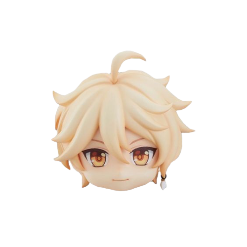
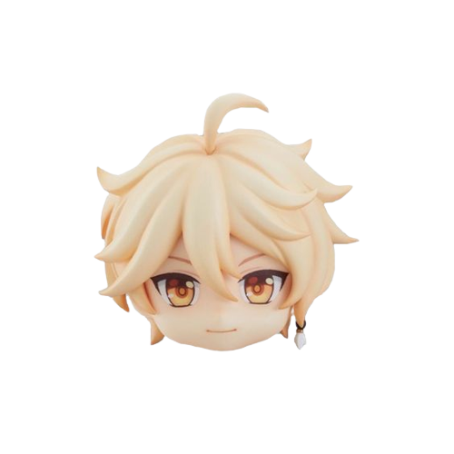

Aether e Lumine,irmãos gêmeos viajam de mundo em mundo,entretanto não esperavam que uma de suas jornadas juntos fosse ser a última.
Ao chegarem no mundo de Teyvat são interrompidos por uma deusa misteriosa,que ameaça acabar com os viajantes,iniciando o confronto com a deus um dos irmãos são separados e capturados pela divindade.
Acordando em um país nem um pouco familiar sem sinal de sua(seu) parceiro(a) ou se quer da poderosa entidade que os separou,sai em uma busca incansável por seu(sua) familiar,com ajuda de uma misteriosa e falante criatura,a Paimon,que como recompensação por ter sido salva se oferece como guia turistica e companheira de viajem.